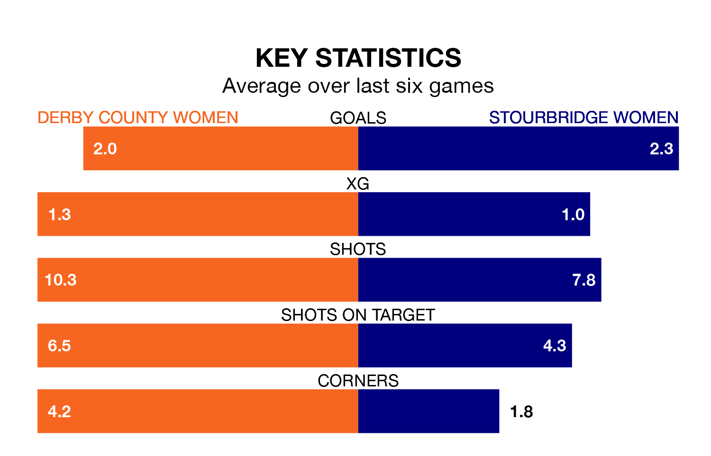

Sunday's early match between Derby County Women and Stourbridge Women promises to be one for the neutrals, as two of Womens National League Premier Division North's most free-scoring sides go head-to-head.
Ahead of the game at the Don Amott Leisure Group Arena, Derby County and Stourbridge sit joint-fourth in the goal-scoring charts, with goal 22s apiece.
Derby County are seventh in the table after 10 games, of which they have won four and drawn one, earning 13 points.
Stourbridge are one place ahead of the hosts in sixth, with four wins and three draws putting them on 15 points.
Derby County are in mixed form in Womens National League Premier Division North, with three wins and a draw from their last six games.
And also with three wins and a draw over that period, the away side's form is identical – they have both taken 10 points from 18.
Derby County's last match was on December 17, a 1-0 loss against West Brom WFC.
Stourbridge beat Fylde Women 2-1 last time out, on January 7.
Updated: 15:34, 08/01/24